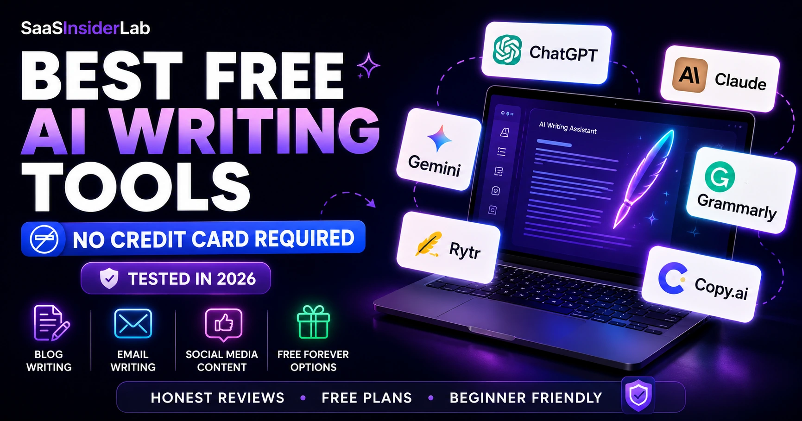

A couple of years ago, if you wanted help writing a blog post, you hired a freelancer or spent three hours staring at a blank screen. Today, you open a browser tab and get a draft in seconds. AI writing tools have genuinely changed how people create content, and that shift has happened fast enough to catch a lot of people off guard.
The market is flooded with options right now. Some are excellent. Many are average. And a surprising number try to sneak in a credit card requirement before you've even had a chance to test whether the tool is worth your time.
There's a meaningful difference between a tool with a genuinely free tier and a tool offering a 3-day trial that quietly bills you on day four. This guide focuses entirely on tools you can use without entering payment details. No trial traps, no expiring free periods that require a card on file. What you'll find here is based on real testing across common writing tasks: blog intros, email drafts, social captions, product descriptions, and brainstorming.
1. Why AI Writing Tools Are Everywhere Now
The appeal isn't complicated. Writing takes time, and time is the one resource every blogger, freelancer, student, and small business owner is perpetually short on. AI tools don't replace good writing judgment — but they do compress the time it takes to get from blank page to working draft significantly.
The other shift is quality. Earlier versions of these tools produced output that sounded mechanical, repetitive, and obviously artificial. The current generation is different. The best free tools in 2026 produce prose that requires editing, not rewriting from scratch. That distinction matters enormously for anyone trying to use AI writing assistance as a genuine productivity tool rather than a curiosity.
Understanding where they shine and where they fall short is the whole point of this guide.
2. How I Evaluated These Free AI Writing Tools
Not all free plans are created equal. A tool that gives you 100 words per day is technically free but practically useless for anyone trying to get real work done. Here's what actually mattered during testing:
Free access quality — Does the free plan let you accomplish something meaningful, or is it just a tease? Ease of use — Can a complete beginner start writing within two minutes of signing up? Content quality — Does the output read naturally, or does it sound assembled from a phrase generator? Daily or monthly limits — How much can you actually produce before hitting a wall? Upgrade pressure — Is the tool constantly nudging you to pay, or does it let you work without interruption? Real-world usefulness — Would a blogger, student, or freelancer genuinely reach for this tool again tomorrow?
With those criteria in mind, here are the tools that made the cut.
3. The Best Free AI Writing Tools in 2026
1. ChatGPT Free — The One Most People Start With
ChatGPT's free tier has become the default starting point for millions of people exploring AI writing. You create an account with an email address, no credit card required, and you're in. The interface is simple enough that you don't need a tutorial.
What stands out on the free plan is range. You can write blog posts, brainstorm ideas, draft emails, clean up rough paragraphs, summarize long documents, or just ask it to help you think through a topic. The GPT-4o model, which powers the free tier as of 2026, produces genuinely good output for most everyday writing tasks.
The biggest limitation is the usage cap. During heavy periods, ChatGPT throttles free users to slower models or adds wait times. There's also no built-in long-term memory on the free plan, so each conversation starts fresh.
| Best for | Brainstorming, first drafts, email writing, and general content assistance |
| Who should use it | Anyone who creates written content — bloggers, freelancers, students, business owners |
| Biggest advantage | Extremely versatile; handles almost any writing task with proper prompting |
| Biggest limitation | Usage caps throttle free users during peak hours; no memory between sessions |
| Free plan? | Yes — GPT-4o mini free, full GPT-4o available on free tier with limits |
| Credit card required? | No |
| Beginner-friendly? | Yes — one of the most intuitive tools to get started with |
2. Claude Free — Surprisingly Good for Longer Writing
Claude tends to be underrated by people who haven't actually spent time with it. The free plan from Anthropic gives you access to a genuinely capable model, and the writing it produces has a quality that's hard to describe without experiencing it: it sounds thoughtful. Less robotic, more like something a careful writer would put together.
For longer content — essays, blog posts, detailed explanations, and nuanced email responses — Claude often outperforms ChatGPT on the free tier in terms of tone and coherence. It handles complex instructions well and doesn't tend to fill responses with empty filler sentences the way some AI tools do.
The main constraint is conversation length. Free users hit limits faster than paid subscribers, and on high-traffic days the model can be slower. It's also less capable at coding-related tasks compared to ChatGPT, which matters if you occasionally want help with technical content. But purely for writing? It's one of the strongest free options available. No credit card needed to sign up.
| Best for | Long-form writing, thoughtful blog content, essays, and nuanced communication |
| Who should use it | Writers, consultants, and anyone who needs depth and tone consistency |
| Biggest advantage | Produces prose that feels genuinely considered rather than mechanically assembled |
| Biggest limitation | Conversation length limits on free tier; slower on high-traffic days |
| Free plan? | Yes — Claude.ai has a free tier. Pro plan starts at $20/month |
| Credit card required? | No |
| Beginner-friendly? | Yes — clean interface, easy to start with |
3. Gemini Free — Google's Answer to AI Writing
Gemini's free plan comes with a noticeable advantage for anyone already living inside Google's ecosystem. The integration with Gmail and Google Docs means you can draft emails or polish documents without switching tabs, which is a real convenience for everyday users.
The writing quality on Gemini's free tier is solid for factual content, research summaries, and professional email drafts. It has access to Google Search, which means it can pull in relatively current information when you ask it to — a genuine edge over ChatGPT's free plan, which works from a knowledge cutoff.
Where Gemini feels less strong is creative writing. The outputs can be a bit flat compared to Claude or ChatGPT when you need something with personality or voice. Still, for research-heavy content and professional communication, it earns its place. No credit card required.
| Best for | Research-backed content, professional emails, and Google Workspace users |
| Who should use it | Small business owners and professionals already in the Google ecosystem |
| Biggest advantage | Real-time web access; integrates directly into Gmail and Google Docs |
| Biggest limitation | Outputs can feel flat for creative or voice-driven writing tasks |
| Free plan? | Yes — generous free tier with Google account |
| Credit card required? | No |
| Beginner-friendly? | Yes — especially for existing Google users |
4. Grammarly Free — Still the Best Editing Assistant
Grammarly isn't really a content generator. It won't write your blog post from scratch. But calling it just a grammar checker undersells what it actually does in 2026. The free plan catches spelling errors, awkward phrasing, passive voice issues, and readability problems, and it works directly in your browser as you type.
For anyone writing with AI-generated content, Grammarly becomes an excellent finishing layer. You draft with ChatGPT or Claude, then run it through Grammarly to catch anything that sounds off. That pairing alone will elevate the quality of most content significantly.
The free plan doesn't include the advanced tone suggestions or style rewriting features from the premium tier, but the core editing capability is genuinely useful and unlimited. It works in Gmail, Google Docs, LinkedIn, and most browser-based writing environments. No payment information needed to get started.
| Best for | Editing and proofreading AI-generated or human-written content |
| Who should use it | Anyone who communicates professionally in writing — which is basically everyone |
| Biggest advantage | Works inside Gmail, Google Docs, LinkedIn, and most browsers automatically |
| Biggest limitation | Not a content creator; it edits, it doesn't generate |
| Free plan? | Yes — solid, unlimited free tier. Premium costs around $12–15/month |
| Credit card required? | No |
| Beginner-friendly? | Very — just install and it runs in the background |
5. Rytr — A Solid Choice for Short-Form Copy
Rytr is one of the few dedicated AI copywriting tools that offers a genuinely usable free plan. The free tier gives you around 10,000 characters per month and covers use cases like social media captions, email subject lines, product descriptions, and blog outlines. No credit card required to sign up.
The interface is structured around use cases, so instead of a blank prompt box, you select what you're trying to write and fill in some context. For beginners who don't yet know how to prompt AI effectively, this guided structure is actually a big help.
The writing quality is decent rather than exceptional. For short punchy copy it performs well. For anything requiring deeper content or a strong authorial voice, it starts to feel limited.
| Best for | Social media content, email subject lines, short ad copy, and beginners |
| Who should use it | Beginners and anyone producing short-form marketing content regularly |
| Biggest advantage | Guided use-case structure lowers the barrier for non-technical users |
| Biggest limitation | 10,000-character monthly cap goes fast; limited for long-form content |
| Free plan? | Yes — ~10,000 characters/month free |
| Credit card required? | No |
| Beginner-friendly? | Yes — one of the most guided experiences available |
6. Copy.ai Free Plan — Marketing Copy on a Budget
Copy.ai built its reputation on marketing copy, and that focus shows in how the free plan is structured. You get a limited number of words per month (around 2,000 as of early 2026), which isn't a lot, but the tool is laser-focused on the kinds of outputs marketers actually need: ad headlines, email sequences, landing page copy, product descriptions, and value propositions.
The quality is noticeably better for marketing-specific tasks than the general-purpose AI tools. If you need a set of five Facebook ad variations or a collection of email subject line options, Copy.ai handles those requests more cleanly than asking ChatGPT the same question.
The free plan limit is the main frustration. 2,000 words per month gets used up quickly, and the upgrade prompts are frequent. It's worth using for specific high-stakes marketing copy where quality matters, rather than as your everyday writing tool.
| Best for | Ad copy, email marketing, landing page writing, and marketing-focused content |
| Who should use it | Marketers, freelancers, and small businesses producing marketing material |
| Biggest advantage | Outperforms general tools specifically on marketing copy formats |
| Biggest limitation | ~2,000 words/month free — gets used up very quickly |
| Free plan? | Yes — limited (~2,000 words/month) |
| Credit card required? | No |
| Beginner-friendly? | Yes — structured templates make it accessible |
7. Writesonic Free Plan — Decent Blog Help With a Catch
Writesonic has a free plan, but it's worth being clear about what that means in practice. The free tier is quite limited, with a small word allowance that doesn't go far if you're trying to produce full articles. What it does well, even on the free plan, is blog introductions, product descriptions, and structured content outlines.
The AI Article Writer feature is one of the more structured blog writing tools available, guiding you through headline selection, outline creation, and paragraph generation. For beginners who want a scaffolded writing experience rather than a blank prompt, that structure is genuinely helpful.
The caveat is that the free plan feels like a demonstration more than a working tool. You'll hit the limit fast, and the upgrade prompts are hard to miss. Test it to understand what structured AI writing looks like, but don't plan on building a content workflow around the free tier alone.
| Best for | Blog intros, structured article outlines, product descriptions |
| Who should use it | Bloggers who want a guided writing experience with clear structure |
| Biggest advantage | Article Writer feature scaffolds the full blog creation process step by step |
| Biggest limitation | Free tier is very limited — more of a trial than a usable free plan |
| Free plan? | Yes — very limited word allowance |
| Credit card required? | No |
| Beginner-friendly? | Moderate — structured but limited on free tier |
8. Notion AI — Only If You're Already in Notion
Notion AI sits in a slightly different category. It's not a standalone AI writing tool — it lives inside the Notion workspace, which means it's only useful if you're already using Notion to organize your work, notes, or content calendar. The AI features are embedded directly into your documents.
As of 2026, Notion offers a limited trial of its AI features rather than a permanent free tier. You can test it without a credit card, but sustained use requires a paid plan. Within a Notion workflow, it's genuinely useful for expanding notes into drafts, summarizing long documents, and rephrasing sections. It's not trying to replace ChatGPT; it's trying to augment your existing writing inside Notion.
If you don't use Notion, there's no reason to start here for AI writing specifically. If you do use Notion, the AI features are worth exploring through the trial. Solopreneurs who rely on Notion heavily will find more detail in our Best AI Tools for Solopreneurs guide.
| Best for | Writing and summarizing within an existing Notion workspace |
| Who should use it | Existing Notion users who want AI inside their workspace |
| Biggest advantage | AI that understands the context of your existing notes and docs |
| Biggest limitation | No permanent free tier — limited trial only; requires Notion subscription for continued use |
| Free plan? | Limited trial only; Notion AI add-on ~$10/month ongoing |
| Credit card required? | No for trial; yes for continued use |
| Beginner-friendly? | Moderate — only relevant if you already use Notion |
4. Quick Comparison Table
Here's a side-by-side view of all eight tools. All require no credit card to start — though Notion AI transitions to paid after the trial.
| Tool | Best For | Free Plan | Credit Card? | Verdict |
|---|---|---|---|---|
| ChatGPT Free | All-round writing & brainstorming | Yes | No | Top Pick |
| Claude Free | Long-form, essays, thoughtful writing | Yes | No | Top Pick |
| Gemini Free | Research + Google Workspace users | Yes | No | Highly Recommended |
| Grammarly Free | Editing & grammar checking | Yes | No | Essential Add-on |
| Rytr | Short-form copy & social posts | ~10k chars/mo | No | Good for Beginners |
| Copy.ai Free | Marketing copy & ad headlines | ~2,000 words/mo | No | Worth Trying |
| Writesonic Free | Blog intros & product descriptions | Limited | No | Test Before Committing |
| Notion AI | Writing within Notion workspace | Trial only | No (trial) | Niche Use Only |
5. Which Free AI Writing Tool Should You Choose?
The honest answer is that for most people, you should start with either ChatGPT or Claude and build from there. Both are free, both are capable, and using them together covers most writing scenarios. That said, specific use cases call for specific tools.
Bloggers and content creators will get the most mileage from Claude for long-form drafts and ChatGPT for brainstorming topic angles and outlines. Add Grammarly Free for a final polish pass.
Freelancers handling marketing work should spend time with Copy.ai's free plan for ad copy and email sequences, while leaning on ChatGPT or Claude for longer client deliverables.
Students will find ChatGPT and Claude most useful for essay planning, research summarization, and rewriting rough drafts. Grammarly rounds that out on the editing side.
Small business owners who live in Google Workspace should try Gemini first. The integration alone saves meaningful time on email and document drafting.
Complete beginners who feel overwhelmed by blank prompt boxes should start with Rytr's guided interface, which scaffolds the experience rather than leaving you to figure it out alone.
Solopreneurs juggling multiple content types will benefit from reading our guide to the Best AI Tools for Solopreneurs in 2026, which covers the broader toolkit beyond writing alone.
6. Frequently Asked Questions
ChatGPT Free and Claude Free are the two strongest options in 2026. Both require only an email address to sign up and offer genuinely useful free tiers without asking for payment information. For most writing tasks, either will serve you well. If you want the best balance of versatility and writing quality, use both.
Yes, and many bloggers already do. The most effective approach is to use AI for drafting, structuring, and brainstorming rather than treating it as a final-copy machine. Write your brief, let the AI generate a draft, then edit it to add your voice and any details that need to be accurate. Claude and ChatGPT handle blog-length content best among the free options.
For most freelance writing tasks, yes. ChatGPT and Claude's free tiers can help with first drafts, rewrites, headline variations, and email copy. The limitations are the usage caps, which become relevant if you're producing high volumes of content daily. Freelancers doing serious volume will likely find the free tiers sufficient for testing but may outgrow them within a few months.
ChatGPT Free is the most popular choice among students for good reason. It handles essay planning, research summaries, explanations of complex concepts, and paragraph rewriting well. Claude is a strong alternative for longer academic writing. Either way, use AI as a thinking and editing aid rather than a submission generator — both for integrity reasons and because unedited AI output rarely reflects your actual understanding.
The most common limitations are usage caps (daily or monthly word limits), access to older or slower AI models, no memory between sessions, and reduced access to advanced features like custom tones or longer document handling. Most free plans are genuinely usable but will show their ceilings if you're trying to run a high-output content operation. The good news is that the top free tiers have improved significantly and are better than many paid tools were just two years ago.
7. Final Verdict
If you're starting today with zero budget and want to build a functional AI writing toolkit, here's the practical path forward: sign up for ChatGPT Free and Claude Free. Use ChatGPT when you need quick drafts, brainstorming, or versatile assistance. Use Claude when you're working on longer pieces that need to sound polished. Install Grammarly Free as a browser extension and let it run quietly in the background on everything you write.
That three-tool combination costs you nothing and covers the majority of what most writers, creators, and small business owners need on a daily basis. Once you've used those consistently for a few weeks, you'll have a much clearer sense of where the free limits actually hurt your workflow, and whether it's worth upgrading anything.
Start narrow, build the habit, and let the time savings compound. The tools will still be there when you're ready to upgrade.